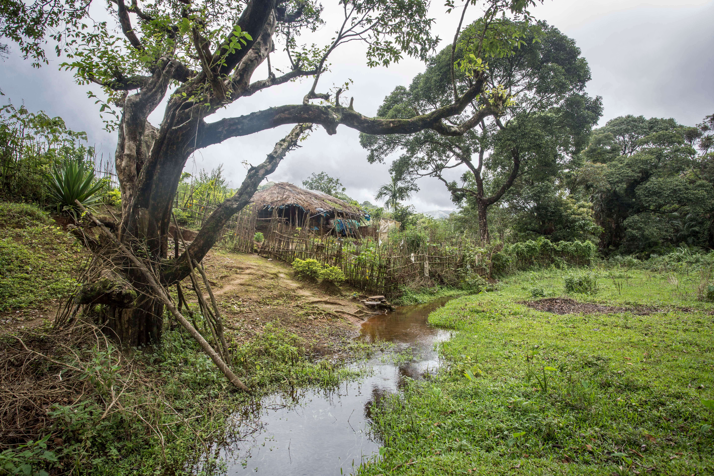
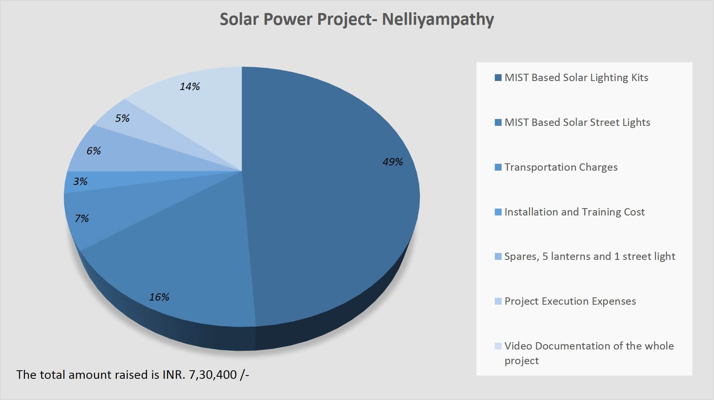
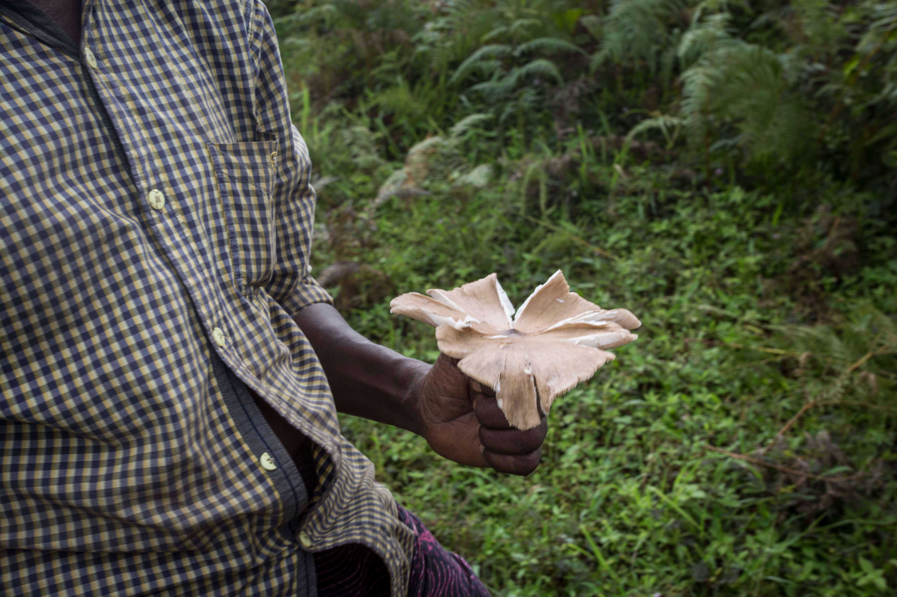
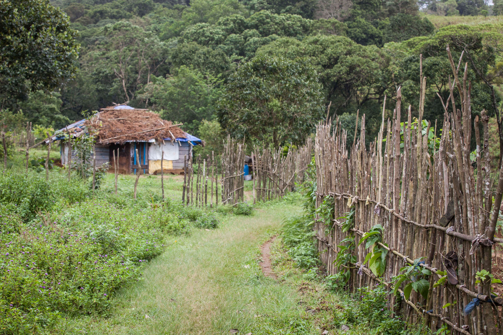
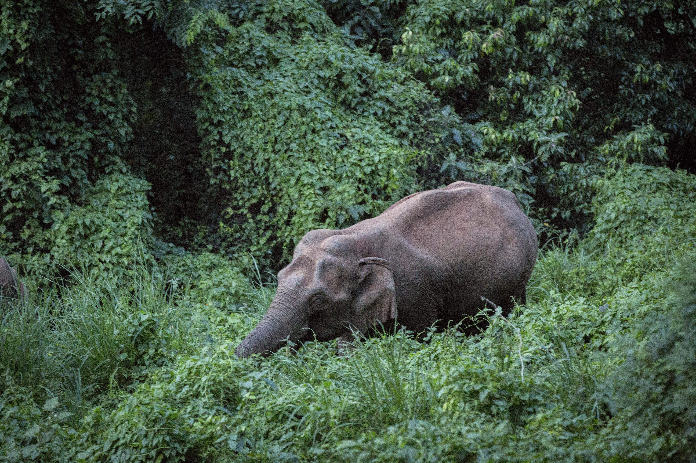
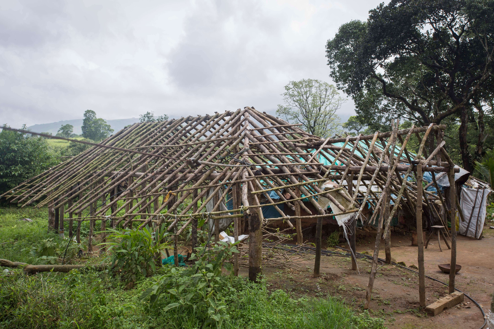
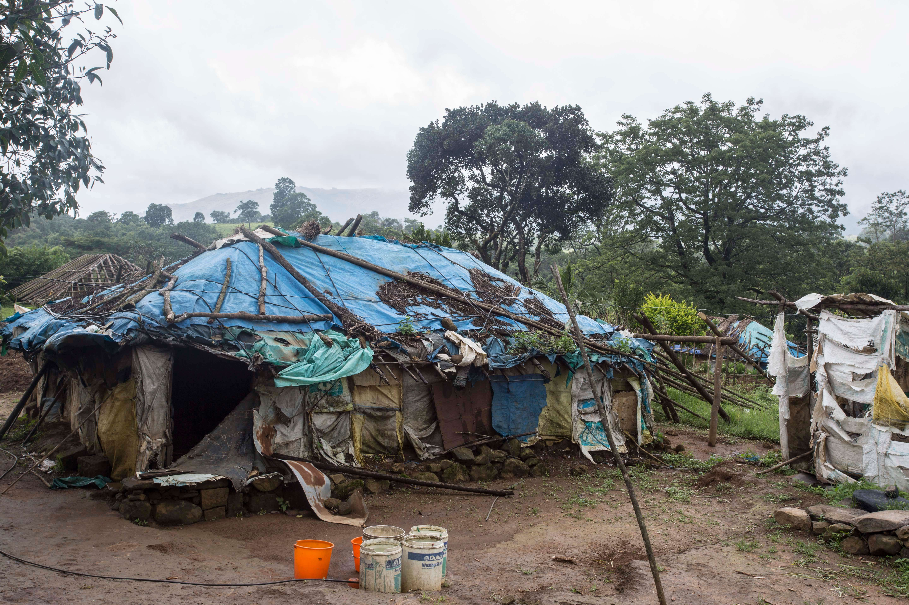
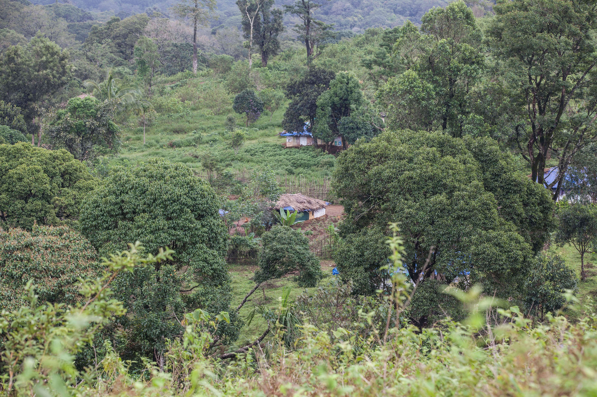
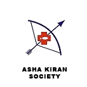
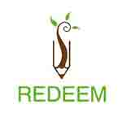

Solar Electrification: Malasar Tribe
Situated 60 kilometers from Palakkad in Kerala, the hilly town of Nelliyampathy has been grappling with tribal rehabilitation and land alienation issues for more than two decades.
The proposal is to provide with a small scale, mobile, portable lighting and mobile charging technology which will survive for a scale of 10 – 15 years.
- Solar Panel: This is a 0.5m x 0.5m (approx.) size crystalline silicon panel which will generate the electricity required
- Battery: The appliances which will be consuming power during the non-generating hours of solar (during non-sunlight hours) will be powered by the energy stored in the battery
- Lantern/Light Source: This is a mobile, portable light source which will generate enough illumination to light the house as well as to light their path during travel
- Mobile Charging Station: Due to the availability of network, a mobile charging station will enable them to utilize their mobiles
- Solar Street Lights: A few LED street lights to illuminate the nodal areas of the tribals habitat
The following are the basic components of the solution:
The solution was to provide a lightweight solar panel that can be mounted on the thatched roof or independently to generate electricity and charge the battery. The battery and the light source will be combined portable unit which will have a port for mobile charging. Two such small scale solutions for each house will enable them to utilize the light for various tasks simultaneously and at the same time also have a backup. The total number of lanterns proposed were 54 with 2 for each of the 27 households and 4 street lights. For the street lights the bamboo poles for mounting were considered.
The USP of Mesha energy was the dual modes of the lantern i.e. it can be used in dim and normal modes which will conserve power. Also with a technology called High Ultra Capacitors (HUC), the storage in the battery is stabilized leading to a longer life.
- Through lighting the following benefits can be realized by the tribals:
- Protection from wild animals
- Ability to work in twilight hours and dark hours
- Better handling of emergency situations
- These basic benefits will be instrumental in reviving their confidence in their fight for survival and will be a small first step to providing them with tools to better their current predicament.
Location: Nelliyampathy, Kerala
Rural Energy Solution
To provide a mobile home lighting system capable of recharging through solar together with street lights around the tribal hamlet in order to ensure safe and easy movement during non-daylight hours as the hamlet is frequented by wild animals.
The Malasar tribe settlement near the town is called Pollukad. Most of the indigenous population residing in these mountainous terrains practice a lifestyle that sustains and nurtures a healthy ecosystem.
Their battle for land and ownership can be traced all the way back to the pre-independence era. Gradually over the years they lost their land to orange farms,tea estates and tiger reserve. The land that they are currently residing in was temporarily allotted to them by the government. In actuality, these are un-farmed lands that belong to private orange farms.
There are about 156 families who belong to the Malasar tribe residing in the forests. Those who have jobs don’t stay here anymore. They have migrated to cities and bigger towns in search of greener pastures. Those who are unemployed are the worst afected.
Despite losing all their arable land, there are many houses today growing fruits and vegetables for their own consumption. However, wild boars end up destroying most of their produce and it gets more and more difficult to maintain their small farms.
 They requested the government to let them put electric fences around their houses and farms to protect themselves from wild animals.
Much to their dismay, they were informed that they weren’t allowed to do so. Permanent structures cannot be built on temporary lands. And, going against the law amounts to criminal ofense. The tribe’s existence warrants little or no attention anymore. They are not even allowed to build proper permanent homes on the land. As a result they are forced to live in temporary flimsy wooden structures covered with plastic.
 Because they are forced to live on temporarily allocated land they are unable to establish an ecosystem to cultivate the basic necessities. This is leading to malnutrition, lack of daily food, inability to generate minimum revenue, migration to cities where they are exploited and in culmination of all these issues the numbers of the tribe are declining at a rapid rate with no hope in sight for further generations.
Further due to the Government’s refusal to erect any permanent structures even basic equipment such as lighting is absent, leading to a threat to the lives of the tribals due to the danger of wild animals which are becoming more aggressive as even their territory is encroached by Government and other commercial entities.
They are left helpless in case of emergencies as they are unable to light their way and track their path to the nearest utilities. With time it only seems the divide between their existence and the rest of the civilization will grow apart until they are extinct due to bureaucracy and helplessness if they are not enabled with even the basic survival tools.
A simple solution such as lighting is hardly ever noticed in the modern civilization. But to a community of people, still literally living in conjecture with wild animals it is a key to survival. Thanks to the advance in current technologies, it is possible to provide such solutions in a sustainable manner at a reasonable cost.
Affiliates
- 
- 